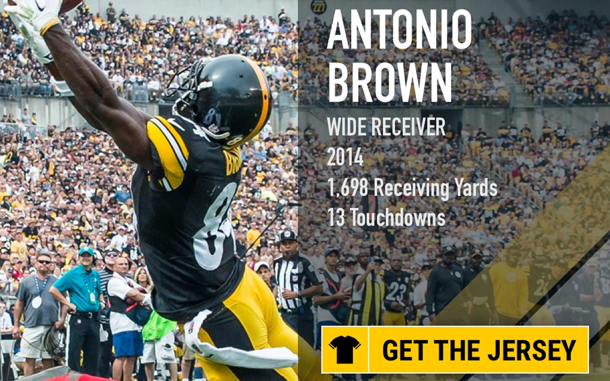
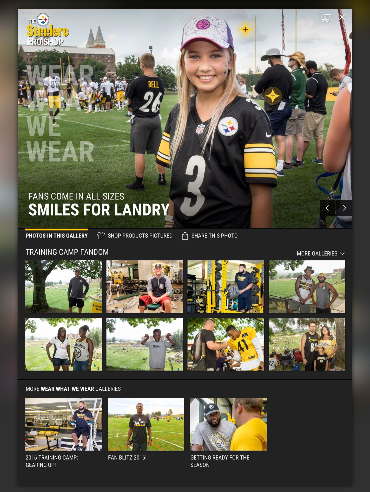
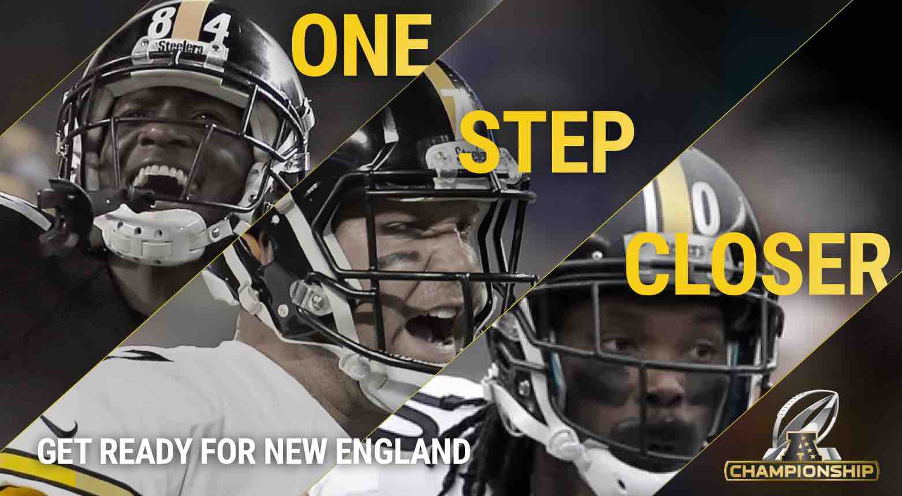
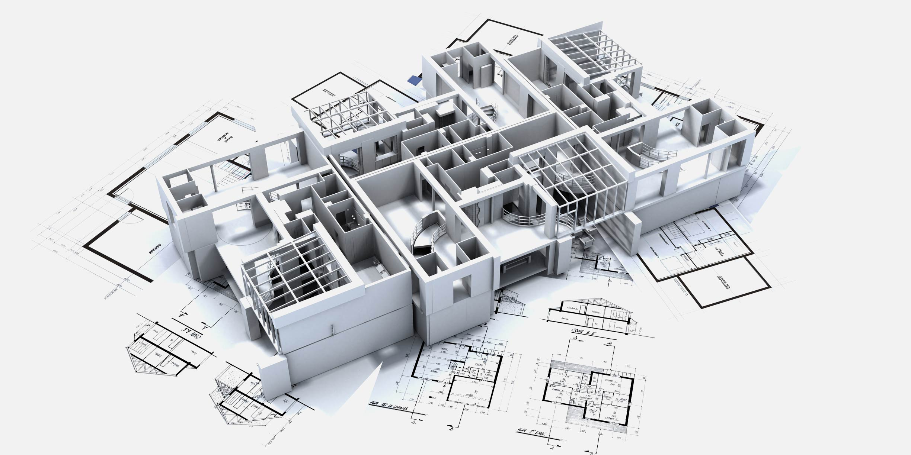

Driving the Team Toward New Opportunities
Finding and Filling In Gaps Blocking Success
Working Through Unexpected Difficulties
Translating great design to development is the unique challenge of our time
Driving the Team Toward New Opportunities
The initial challenge was to assemble a cross-disciplinary team from members around the world. We had to overcome technical hurdles as well as form a team-mindset focused on one goal.
What drove my work was a focus on creating the ultimate product for the team. It had to be better than any other team in the NFL. Better than Nike, better than NFLShop, significantly better than all of the competition.
Finding and Filling In Gaps Blocking Success
Much of the excitement around what the store could be like dissipated as the development team claimed the concepts could not be implemented.
In this case, I worked with the development team to establish lines of responsibility with the system and I stepped in to code the front-end pieces they were uncomfortable developing.
I created a prototype using HTML, CSS, and JavaScript (JQuery and Angular) that helped communicate functionality to stakeholders and the development team. We used the prototype to describe user interactions as well as discuss the database structures and APIs the development team would need to create.
Creative technologists know how to think of never-before-seen combinations of technology and apply them quickly to solve problems. With this team, I didn't stop with my assigned tasks - I branched out and helped those team members do the same. They began to come up with their own creative solutions when they knew the environment encouraged that behavior.
Working Through Unexpected Difficulties
Serving the leaders of the organization including the team owner, Art Rooney II, required a lot of listening and willingness to rework - and rework again. As a consultant, I think its rarely my place to say "no" outright. Instead, I ask questions to uncover the underlying goal and expose potential limitations.
I own the quick solution proudly. Its only a "hack" if the solution is inappropriate for the situation. In advance of a potential playoff run, I created a system within their eCommerce platform that displayed messaging and promotion on the site based on potential outcomes. The marketing department could turn these on or off at will without coding or deployments.
This marketing campaign highlighted star players from each weeks' games. It wasn't my first concept. Susan (the CMO) liked my initial designs, but challenged me to come up with something better — more focused on our guiding principles.
I had the challenge of working with a team that was separated geographicallys — spread from Arizona to Colorado to Pittsburgh to Mumbai. With the development team, I had to listen to how they've solved problems in the past, and what they saw as the limitations with the current platform.
Translating great design to development is the unique challenge of our time
The systems and software tools we work with have evolved beyond the limitations of what they functionally can't do. We're now limited by our organizational and individual inability to approach problems creatively.
For development and design, we are now set free from the bonds of technology, but the task is in how we go about solving problems not whether we can solve them.
We know what's possible with technology. We know what makes a great design. We know how to realize a vision. People don't hire a construction company because they can swing a hammer. They hire them because they wan't to live in their dream home.
